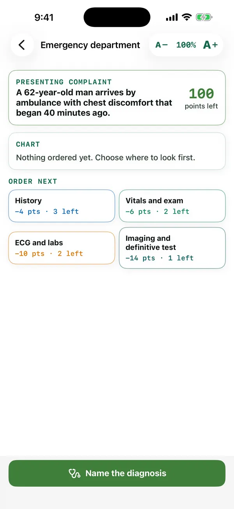

MedForge / Apps / Chest Pain Detective
Acute care · Clue hunt
Chest Pain Detective
Fewer clues, higher score.
Cases covering the dangerous and the common causes of chest pain. Order clues one at a time and name the diagnosis before the bill runs up.
Free preview: the first two cases. Unlock the full library. $3.99/month or $29.99/year
Live demo of Chest Pain Detective
Try it: case 2, sudden severe chest pain
Order clues one at a time. Each costs points. Name the diagnosis early.
In the app
A real screen from Chest Pain Detective
From the iPhone app, in a pre-release build. The Android app follows the same design, and the text size can be changed from 40% to 300% on every screen.

Sources
Every fact in this app is cited
These are the references this app draws on. Inside the app, each answer links to its source in a reading window that keeps your place.
- Chest pain (encyclopedia)National Library of Medicine, MedlinePlus · NIH / NLM MedlinePlus
- Esophageal perforation (encyclopedia)National Library of Medicine, MedlinePlus · NIH / NLM MedlinePlus
- GERDNational Library of Medicine, MedlinePlus · NIH / NLM MedlinePlus
- Myocarditis (encyclopedia)National Library of Medicine, MedlinePlus · NIH / NLM MedlinePlus
- Panic disorder (encyclopedia)National Library of Medicine, MedlinePlus · NIH / NLM MedlinePlus
- PneumoniaNational Library of Medicine, MedlinePlus · NIH / NLM MedlinePlus
- ShinglesNational Library of Medicine, MedlinePlus · NIH / NLM MedlinePlus
- Heart Attack: DiagnosisNational Heart, Lung, and Blood Institute (NIH) · NHLBI / NIH
- Heart Attack: SymptomsNational Heart, Lung, and Blood Institute (NIH) · NHLBI / NIH
- CostochondritisNHS (England) · NHS (UK)
- Panic disorderNHS (England) · NHS (UK)
- PneumoniaNHS (England) · NHS (UK)
- ShinglesNHS (England) · NHS (UK)
- Pneumonia in adults: diagnosis and management (CG191)National Institute for Health and Care Excellence (NICE) · NICE (UK)
- Cocaine DrugFactsNational Institute on Drug Abuse (NIH) · NIDA / NIH
- Panic Disorder: What You Need to KnowNational Institute of Mental Health (NIH) · NIMH / NIH
- International Expert Consensus Document on Takotsubo Syndrome (Part I): Clinical Characteristics, Diagnostic Criteria, and PathophysiologyEuropean Heart Journal (open access via PubMed Central) · Peer-reviewed consensus (PMC)
- Boerhaave SyndromeStatPearls Publishing, National Library of Medicine (NCBI Bookshelf) · NIH / NLM
- Community-Acquired PneumoniaStatPearls Publishing, National Library of Medicine (NCBI Bookshelf) · NIH / NLM
- Cocaine ToxicityStatPearls Publishing, National Library of Medicine (NCBI Bookshelf) · NIH / NLM
- CostochondritisStatPearls Publishing, National Library of Medicine (NCBI Bookshelf) · NIH / NLM
- Acute MyocarditisStatPearls Publishing, National Library of Medicine (NCBI Bookshelf) · NIH / NLM
- Panic DisorderStatPearls Publishing, National Library of Medicine (NCBI Bookshelf) · NIH / NLM
- Takotsubo CardiomyopathyStatPearls Publishing, National Library of Medicine (NCBI Bookshelf) · NIH / NLM
- Herpes ZosterStatPearls Publishing, National Library of Medicine (NCBI Bookshelf) · NIH / NLM
- Symptoms & Causes of GER & GERDNational Institute of Diabetes and Digestive and Kidney Diseases (NIH) · NIDDK / NIH
- Gastroesophageal Reflux Disease (GERD)StatPearls Publishing, National Library of Medicine (NCBI Bookshelf) · NIH / NLM
- Aortic dissection (encyclopedia)National Library of Medicine, MedlinePlus · NIH / NLM MedlinePlus
- Heart attack (encyclopedia)National Library of Medicine, MedlinePlus · NIH / NLM MedlinePlus
- Pulmonary EmbolismNational Library of Medicine, MedlinePlus · NIH / NLM MedlinePlus
- Pericarditis (encyclopedia)National Library of Medicine, MedlinePlus · NIH / NLM MedlinePlus
- Collapsed lung (pneumothorax) (encyclopedia)National Library of Medicine, MedlinePlus · NIH / NLM MedlinePlus
- Cardiac tamponade (encyclopedia)National Library of Medicine, MedlinePlus · NIH / NLM MedlinePlus
- Aortic AneurysmNational Heart, Lung, and Blood Institute (NIH) · NHLBI / NIH
- Heart AttackNational Heart, Lung, and Blood Institute (NIH) · NHLBI / NIH
- Venous Thromboembolism: Pulmonary EmbolismNational Heart, Lung, and Blood Institute (NIH) · NHLBI / NIH
- Acute coronary syndromes (NG185)National Institute for Health and Care Excellence (NICE) · NICE (UK)
- Major trauma: assessment and initial management (NG39)National Institute for Health and Care Excellence (NICE) · NICE (UK)
- Venous thromboembolic diseases (NG158)National Institute for Health and Care Excellence (NICE) · NICE (UK)
- Acute Coronary SyndromeStatPearls Publishing, National Library of Medicine (NCBI Bookshelf) · NIH / NLM
- Acute Myocardial InfarctionStatPearls Publishing, National Library of Medicine (NCBI Bookshelf) · NIH / NLM
- Aortic DissectionStatPearls Publishing, National Library of Medicine (NCBI Bookshelf) · NIH / NLM
- Non-ST-Segment Elevation Myocardial Infarction (NSTEMI)StatPearls Publishing, National Library of Medicine (NCBI Bookshelf) · NIH / NLM
- Acute Pulmonary EmbolismStatPearls Publishing, National Library of Medicine (NCBI Bookshelf) · NIH / NLM
- PericarditisStatPearls Publishing, National Library of Medicine (NCBI Bookshelf) · NIH / NLM
- Pulsus ParadoxusStatPearls Publishing, National Library of Medicine (NCBI Bookshelf) · NIH / NLM
- Cardiac TamponadeStatPearls Publishing, National Library of Medicine (NCBI Bookshelf) · NIH / NLM
- Tension PneumothoraxStatPearls Publishing, National Library of Medicine (NCBI Bookshelf) · NIH / NLM
- Unstable AnginaStatPearls Publishing, National Library of Medicine (NCBI Bookshelf) · NIH / NLM
Keep going